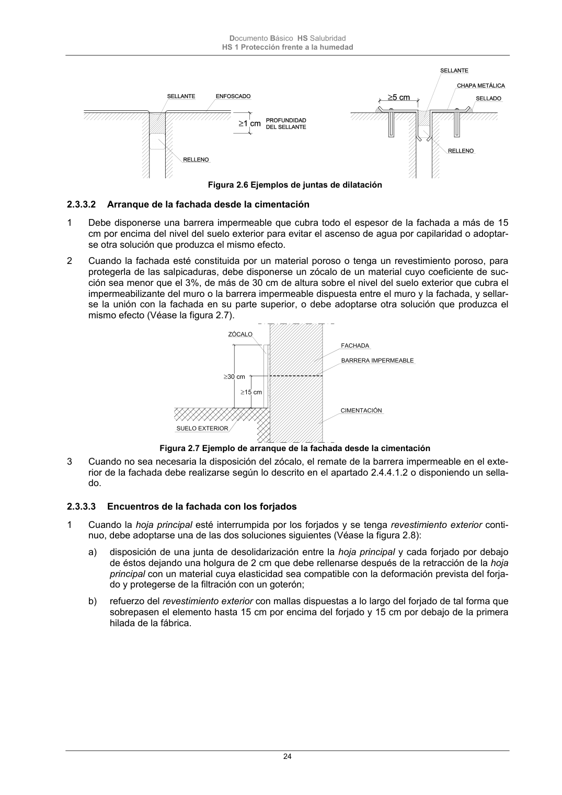

DB-HS · Página 24 · versión 2022-06-14
SHA256: 68df3caacc95f71aee2ec1ba7b2c65ae66155c21e3a8785521b8fdd4fd640d3b · página física 24 de 184 · métodos de encabezado
solo si están cotejados.
Formatos: Markdown · JSON de bloques · PDF p. 24 · imagen PNG
Documento Básico HS Salubridad HS 1 Protección frente a la humedad 24 Figura 2.6 Ejemplos de juntas de dilatación 2.3.3.2 Arranque de la fachada desde la cimentación 1 Debe disponerse una barrera impermeable que cubra todo el espesor de la fachada a más de 15 cm por encima del nivel del suelo exterior para evitar el ascenso de agua por capilaridad o adoptar- se otra solución que produzca el mismo efecto. 2 Cuando la fachada esté constituida por un material poroso o tenga un revestimiento poroso, para protegerla de las salpicaduras, debe disponerse un zócalo de un material cuyo coeficiente de suc- ción sea menor que el 3%, de más de 30 cm de altura sobre el nivel del suelo exterior que cubra el impermeabilizante del muro o la barrera impermeable dispuesta entre el muro y la fachada, y sellar- se la unión con la fachada en su parte superior, o debe adoptarse otra solución que produzca el mismo efecto (Véase la figura 2.7). Figura 2.7 Ejemplo de arranque de la fachada desde la cimentación 3 Cuando no sea necesaria la disposición del zócalo, el remate de la barrera impermeable en el exte- rior de la fachada debe realizarse según lo descrito en el apartado 2.4.4.1.2 o disponiendo un sella- do. 2.3.3.3 Encuentros de la fachada con los forjados 1 Cuando la hoja principal esté interrumpida por los forjados y se tenga revestimiento exterior conti- nuo, debe adoptarse una de las dos soluciones siguientes (Véase la figura 2.8): a) disposición de una junta de desolidarización entre la hoja principal y cada forjado por debajo de éstos dejando una holgura de 2 cm que debe rellenarse después de la retracción de la hoja principal con un material cuya elasticidad sea compatible con la deformación prevista del forja- do y protegerse de la filtración con un goterón; b) refuerzo del revestimiento exterior con mallas dispuestas a lo largo del forjado de tal forma que sobrepasen el elemento hasta 15 cm por encima del forjado y 15 cm por debajo de la primera hilada de la fábrica.
